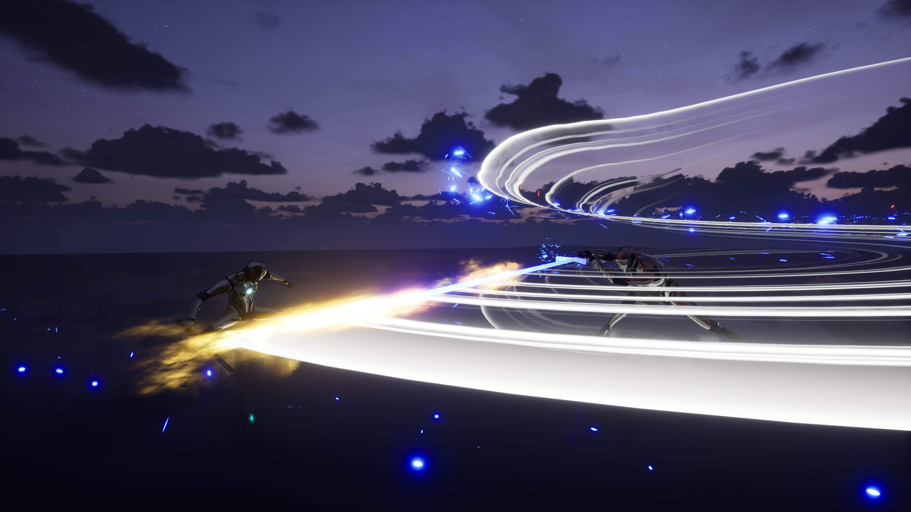
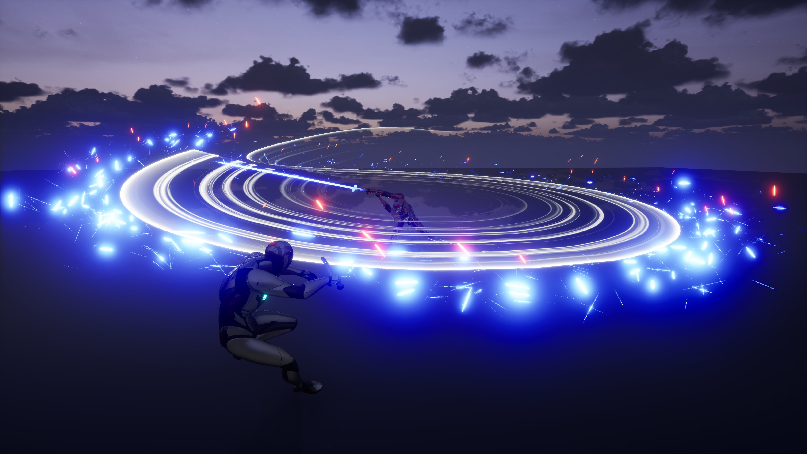
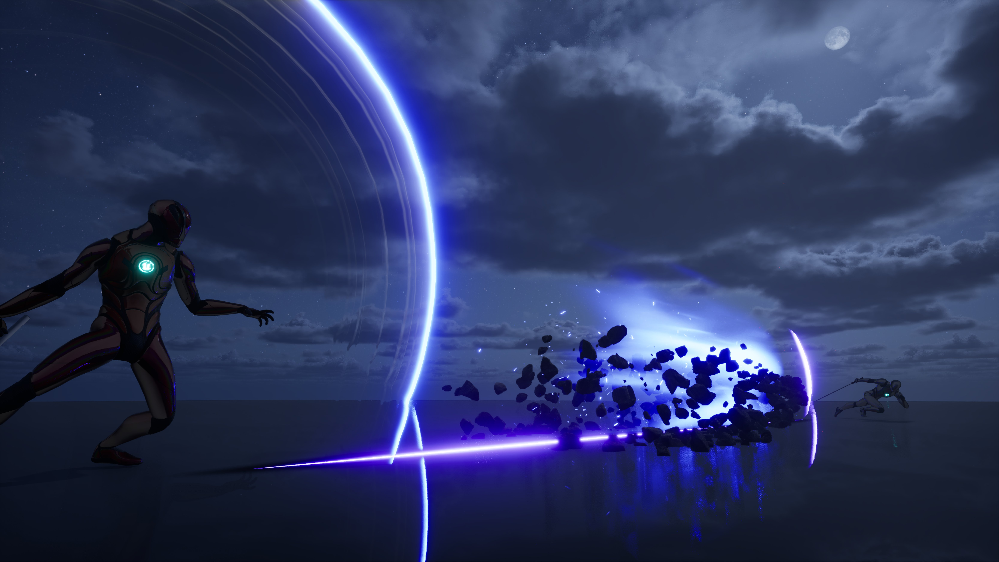
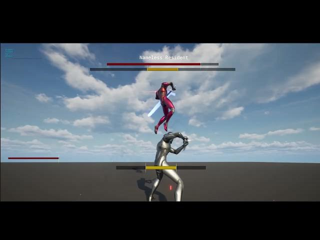
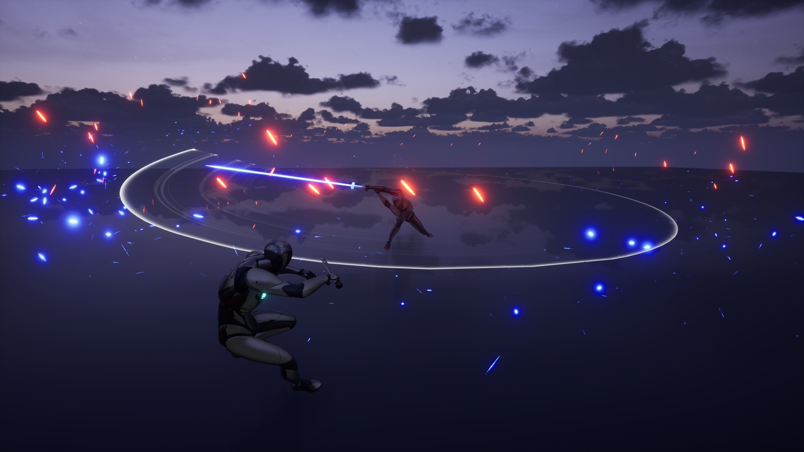
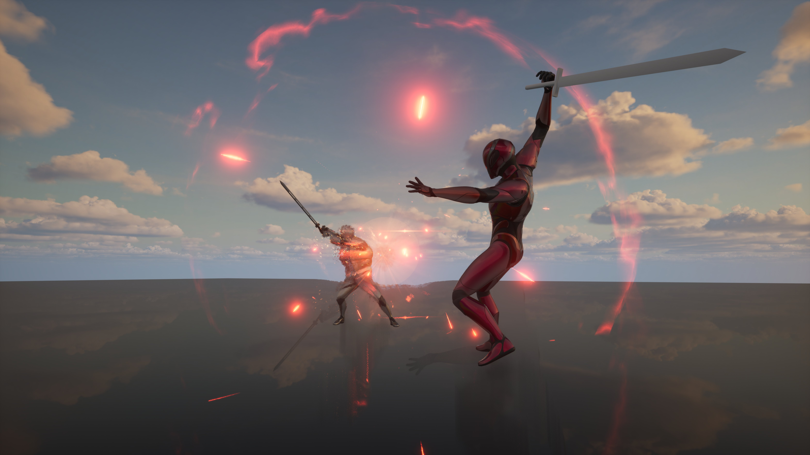

of God
A solo-built third-person combat demo in UE5. Every boss attack is a layered puzzle — forcing position, timing, and mechanic choice simultaneously to create an opening the player has to earn. Built from scratch: player combat, enemy AI, locomotion, and the architecture underneath all of it.








A complete combat system designed and built solo — player side, enemy AI, and the architecture underneath both. The boss runs 100+ discrete named attacks across phase-gated behavior trees with velocity-aware selection, a separate reactive defensive tree, and a bespoke decorator and task library. This is the depth I build independently when given full ownership.
Each boss attack bundles its animation, movement curves, starting position, and play-rate scaling into one data struct. Tuning became a single field change; adding a new attack meant filling out a struct, not touching logic.
Proactive attack selection and reactive countering competed when sharing one tree. Splitting into two parallel trees gave each its own priority — one phase-gated, one reading live player state.
Attacks that just deal damage turn fights into memorization. Every attack in TOG imposes a constraint on position, timing, and mechanic choice — and resolves into a specific opening as the reward for reading it correctly.
Most boss fights peak at the attack pattern. TOG treats the defensive exchange as the fastest-paced moment of the fight — where both fighters read each other in real time — and routes every other system toward it.
Combo System
Chained light and heavy attack sequences with movement-adaptive inputs and weapon-specific behaviour trees. Designed for expressive chaining without sacrificing readability.
Deflection System
Frame-precise deflection windows trigger QTE-driven counter sequences and finisher states. Rewards skilled play with spectacular visual payoff.
Stat & State System
Data-driven attribute tables govern hit reactions, stagger thresholds, and stamina gating — all exposed via data assets for tuning without recompiling.
Locomotion System
8-directional state machine driven by speed, angle, and weapon stance. Covers guard strafe, aim locomotion, and multi-tier landings — blended with orientation warping and procedural foot IK.
Each attack carries per-action weighted probabilities stored in a custom data struct (F_DiscreetActionWeightedChances) and queried live at every BT decision point. Two dedicated decorators — BTD_AttackSequenceChance and BTD_FollowUpChance — roll against these weights before committing to any chain or follow-up. The boss resists memorization without feeling random: unpredictability is structured, not noise.